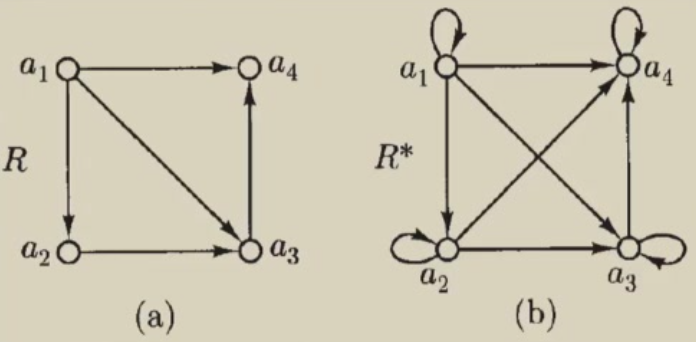

计算理论02:集合、关系和语言(II)
1.Three Fundamental Proof Technique
Cantor定理：令$f$为从集合$A$到其幂集$P(A)$(或者写成$2^A$)的映射。那么，对于任何集合$A$，有$\text{card}(A)<\text{card}\left(P(A)\right)$。
Proof:
第一步：存在单射$A\to P(A)$
定义映射
$$i:A\to P(A),\quad i(a)=\{a\}$$
若$a\neq b$，则$\{a\}\neq \{b\}$，故$i$为单射。于是
$$|A|\le |P(A)|$$
第二步：不存在满射$A\to P(A)$
令$f:A\to P(A)$为任意一个函数（随便取）。定义集合
$$B=\{a\in A:a \notin f(a)\}$$
显然$B\subseteq A$，故$B\in P(A)$。
我们证明：对任意$a\in A$，都有$f(a)\neq B$。
反设存在$a_0\in A$使得$f(a_0)=B$。则由$B$的定义，
$$a_0\in B\Longleftrightarrow a_0\notin f(a_0)=B$$
这给出矛盾：$a_0\in B\Longleftrightarrow a_0\notin B$。
故不存在这样的$a_0$。于是$B$没有被$f$命中，即$B\in \text{Im}(f)$。所以任何从$A$到$P(A)$的函数都不是满射。
因此，从来不存在$A$到$P(A)$的双射，由此得到
$$|A|<|P(A)|$$
证毕。
Example:考虑集合 $T$，其中包含所有由二进制数字组成的无限序列（即每个数字为零或一）。集合 $T$ 可数吗？若序列为有限序列呢？
Solution:
1)不可数。
-
对角线证明（康托法）： 假设 $T$ 可数，能列成 $s^{(1)},s^{(2)},\dots$。构造新序列 $t$ 使得第 $n$ 位 $t_n=1-s^{(n)}_n$。则 $t$ 与第 $n$ 个列出的序列在第 $n$ 位不同，因而不等于任何 $s^{(n)}$。这与“已列出全部元素”矛盾，故 $T$ 不可数。
-
等势于幂集的证明： 把每个无限序列 $x=(x_1,x_2,\dots)$ 对应到子集 $S_x=\{n\in\mathbb N:x_n=1\}$。这是 $T\leftrightarrow\mathcal P(\mathbb N)$ 的双射。由康托定理 $|\mathcal P(\mathbb N)|>|\mathbb N|$，故 $T$ 不可数。
- 可数
记长度为 $n$ 的二进制串集合为 $\{0,1\}^n$，其大小 $2^n$（有限）。全体有限串是
$$\bigcup_{n=0}^\infty {0,1}^n,$$
是可数个有限集的并，因此是可数的。
2.Closure
2.1. 直觉性构想
- 自然数$\mathbb{N}$在$+$下是闭的，比如，对于两个给定的自然数$n,m$，我们总有$n+m \in \mathbb{N}$
- 自然数$\mathbb{N}$在$-$下不是闭的，比如，存在两个自然数$n,m$使得$n-m\notin \mathbb{N}$
- 整数集$\mathbb{Z}$在$-$下是闭的
- $\mathbb{Z}$是最小的包含$\mathbb{N}$的在$-$下闭的集合
2.2.关系闭集
对于任意二元关系$R$，均可根据其性质的任意组合构造闭包。
Note：$R$的反身性、传递性闭包经常记作$R^*$。
定义：令$R\subseteq A\times A$是一个有向图。$R$的反身性、传递性闭包是关系
$$R^*=\{(a,b)|a,b\in A\text{ and there is path from } a\text{ to }b\text{ in }R\}$$
一个例子如下图：

考虑两个有向图。观察得到：
- $R^*=R\cup \{(a_i,a_i)|(i=1,2,3,4)\cup\{a_2,a_4\}\}$
- $R\subseteq R^*$
- $R^*$是反身的和传递的
- $R^*$是最小的包含$R$的反身的和传递的集合
若R由矩阵A表示，则对应的R*的A*是什么？
设基集 $X={x_1,\dots,x_n}$。二元关系 $R\subseteq X\times X$ 的邻接矩阵 $A=(a_{ij})\in{0,1}^{n\times n}$ 规定
$$a_{ij}=1 \iff (x_i,x_j)\in R,\qquad a_{ij}=0\ \text{否则}.$$
在 布尔半环 上进行矩阵运算（“加法”为 $\vee$；“乘法”为 $\wedge$；矩阵乘法用 $\vee/\wedge$ 代替 $+/\times$）：
$$(C=A\odot B)_{ij}=\bigvee_{k=1}^n \big(a_{ik}\wedge b_{kj}\big).$$
这样定义的 $A^k$（布尔幂）满足：
$$(A^k)_{ij}=1 \iff \text{存在一条从 }x_i\text{ 到 }x_j\text{ 的长度恰为 }k\text{ 的 }R\text{-路径}.$$
定理（矩阵形式的闭包）
$R^{*}$ 的邻接矩阵为
$$\boxed{A^{*} = I \vee A \vee A^2 \vee \cdots \vee; A^{n-1}}$$
（其中 $I$ 是单位矩阵，$\vee$ 是按元“或”）。
换言之，$(A^{*})_{ij}=1$ 当且仅当从 $x_i$ 到 $x_j$ 存在任意长度 $\ge 0$ 的路径。
若基集无限，则仍有 $A^{*}=I\vee A\vee A^2\vee\cdots$ 的无穷并（在有限情形下截到 $n-1$ 即可，因为最短简单路长 $\le n-1$）。
- 包含 $R$ 且反身：显然 $A\le A^{*}$，且 $I\le A^{*}$（$\Rightarrow$ 反身）。
- 传递：由布尔乘法的分配性与幂的定义，
$$A^{*}\odot A^{*}=\bigvee_{p\ge0}\bigvee_{q\ge0} A^{p+q} \le\bigvee_{r\ge0} A^{r} =A^{*},$$
故 $A^{*}$ 对应的关系传递。 - 极小性：若 $B$ 是任意满足 $A\le B$ 且反身、传递的矩阵，则由单调性归纳得 $A^k\le B$（因为 $B$ 传递 $\Rightarrow B\odot B\le B$）。于是
$$A^{*}= \bigvee_{k\ge0} A^k \le B.$$
故 $A^{*}$ 是所有这类 $B$ 的最小者。
取基集顺序 $(a_1,a_2,a_3,a_4)$，关系 $R$ 为图 $a$ 中的箭头：
$$a_1\to a_3,\ a_1\to a_4,\ a_2\to a_1,\ a_2\to a_3.$$
其邻接矩阵
$$A=
\begin{pmatrix}
0&0&1&1\\
1&0&1&0\\
0&0&0&0\\
0&0&0&0
\end{pmatrix}.$$
计算布尔幂：
$$A^2=
\begin{pmatrix}
0&0&0&0\\
0&0&1&1\\
0&0&0&0\\
0&0&0&0
\end{pmatrix},\qquad
A^3=O.$$
于是
$$A^{*}=I\vee A\vee A^2=
\begin{pmatrix}
1&0&1&1\\
1&1&1&1\\
0&0&1&0\\
0&0&0&1
\end{pmatrix}.$$
读矩阵得 $R^{*}$ 的边：
- 反身：$a_i\to a_i$（对所有 $i$）。
- 原有边保持：$a_1\to a_3, a_1\to a_4, a_2\to a_1, a_2\to a_3$。
- 新增的传递边：$a_2\to a_4$（因为 $a_2\to a_1\to a_4$）。
- 其他边不存在（例如从 $a_3$ 或 $a_4$ 出发没有可达别点）。
这正是“最小的包含 $R$ 的反身且传递的关系”。
- Warshall/Floyd–Warshall：从 $T=A\vee I$ 出发，依次对每个中间点 $k$ 执行
$$T_{ij}\gets T_{ij}\vee (T_{ik}\wedge T_{kj}),\quad \forall i,j,$$
最终 $T=A^{*}$。
例子：传递性闭包
定义：包含$R$的并具有传递性的最小的关系（通常称作$R^+$）
更一般的，$R^+$是满足以下的关系：
- $R\subseteq R^+$
- $R^+$是传递的
- $\forall R'$，如果$R\subseteq R'$且$R'$是传递的$\Rightarrow R^+\subseteq R'$
Q:Can you define the relation of "parent-of"? What is symmetric, transitive closure of "parent-of" is?
1. 定义“parent-of”关系在集合 (P)（所有人）上，定义二元关系：
$$\text{parent-of} = {(x,y)\in P\times P : x \text{ 是 } y \text{ 的父母}}.$$
例如，若 Alice 是 Bob 的母亲，则 $(\text{Alice},\text{Bob}) \in \text{parent-of}$。
- 传递闭包（transitive closure）
定义：传递闭包 $R^{+}$ 是包含 $R$ 的最小传递关系。
对于 $\text{parent-of}$，它的传递闭包是 ancestor-of（祖先关系）：
$$\text{ancestor-of} = {(x,y): x \text{ 是 } y \text{ 的父母，或父母的父母，或更上代}}.$$
即：
- 若 $x$ 是 $y$ 的父母，则 $x$ 是 $y$ 的祖先。
- 若 $x$ 是 $z$ 的祖先且 $z$ 是 $y$ 的父母，则 $x$ 是 $y$ 的祖先。
- 这是“父母关系”的不断传递扩展。
- 对称闭包（symmetric closure）
定义：对称闭包 $R^{\text{sym}}$ 是包含 $R$ 的最小对称关系。
对于 $\text{parent-of}$，对称闭包是 parent-child 关系：
$$\text{parent-child} = {(x,y): x \text{ 是 } y \text{ 的父母，或 } y \text{ 是 } x \text{ 的父母}}.$$
即在“父母”关系上加上反向的“子女”关系。
- 对称传递闭包（symmetric, transitive closure）
先取对称闭包，再取传递闭包。结果是“同一个家族谱系中所有直系祖先和直系后代之间的连通关系”。
换句话说，它就是 kinship-of（血缘直系关系）：
$${(x,y): x,y \text{ 在族谱上相连，不论祖先或后代}}.$$
例如：
- Alice 是 Bob 的母亲 $\Rightarrow (\text{Alice},\text{Bob})$ 与 $(\text{Bob},\text{Alice})$ 都在闭包中；
- 再加上传递性，Alice 也与 Bob 的孩子（孙子辈）相连，反之亦然；
- 最终得到：所有直系祖先/后代之间都成对相连。
3.Alphabet and Language
数据在计算机内存中以位串或其他适于操作的符号形式编码。
计算理论的数学研究始于对符号串操作数学原理的理解。
3.1.Alphabet
定义：任何一个有限集被称作一个alphabet。Alphabet的元素被称为symbols of alphabet。
符号：我们使用符号$\Sigma$来表示alphabet。
例子：
- $\Sigma = \{\leftarrow, \varPhi, \exists,\sqrt{} \}$
- $\Sigma = \{a,b,c\}$
- $\Sigma = \{n\in \mathbb{N}:n\le 10^5\}$
- $\Sigma = \{0,1\}$ is called a binary alphabet.
3.2.Strings
我们称alphabet $\Sigma$的有限序列为words或$\Sigma$上的strings.
我们用$e$代表$\Sigma$上的空字符。
我们用$\Sigma^*$表示$\Sigma$上所有字符串的集合。
$\Sigma^*$的元素被称为$\Sigma$上的字符串。
我们写$w\in \Sigma^*$来表示$w$是$\Sigma$中的字符串。
举例：令$\Sigma=\{a,b\}$，我们将用简写符号在$\Sigma$上写出一些字符串，表示为：$$aaa,bbb,ab,abab$$
Operation of Strings:
- 连接：$x\circ y$或$xy$
- Substring, suffix, prefix
- 例子，$\forall w, we=ew=w$
- 字符串指数
- $w^0=e$
- $w^{i+1}=w^i\circ w$，对任意的$i\ge 0$
- 逆
- 如果$w$的字符串长度为0，那么$w^R=w=e$
- 如果$w$的字符串长度是$n+1>0$，那么对$a\in \Sigma$，$w=ua$，有$w^R=au^R$
3.3.Languages
语言：字符串的集合。
设Alphabet:$\Sigma$。全体字符串的集合为$\Sigma^* (e\in \Sigma)$。定义语言$L\subseteq \Sigma^*$。
$\varPhi,\Sigma$和$\Sigma^*$都是语言。
有限语言：列举所有的字符串
无限语言：通过下列范式来确定
$$L=\{w\in \Sigma^*:w\text{ has property } P\}$$
例子：$L=\{ab,aabb,aaabbb,\cdots\}=\{a^nb^n|n\ge 1\}$
定理：若$\Sigma$是一个有限的alphabet，那么$\Sigma^*$是一个无限可数的集合。
下面给出一个有趣的证明（本质是基于哥德尔素数编码）：
将alphabet固定编号：$\Sigma=\{\sigma_1,\sigma_2,\cdots,\sigma_k\}$。记$\{p_j\}$是素数列。根据唯一分解定理（算术基本定理），每个$N\in\mathbb{N}_{\ge 1}$，都能且只能以一种方式写成素数幂的乘积
$$N=\prod_{j=1}^{\infty}p_j^{e_j},\quad e_j\in\mathbb{N}_{\ge 0},\text{且除有限个外}e_j=0$$
定义映射$f:\Sigma^*\to\mathbb{N}_{\ge 1}$
- 空串编码为$f(e)=1$(空乘积)。
- 对非空串$w=\sigma_{i_1}\sigma_{i_2}\cdots\sigma_{i_n}$(其中每个$i_t\in\{1,\cdots,k\}$)，定义$$f(w)=\prod_{t=1}^{n}p_t^{i_t}$$
也就是说，第$t$个字符用“第$t$个素数”的指数来记录它是$\sigma_{i_t}$中的哪一个。
下面证明$f$是单射：若$f(u)=f(v)$，则$u=v$。
设$u = \sigma_{i_1}\cdots\sigma_{i_m},\quad v=\sigma_{j_1}\cdots\sigma_{j_n}$
由定义
$$f(u)=\prod_{t=1}^m p_t^{i_t},\quad f(v)=\prod_{t=1}^n p_t^{j_t}$$
若$f(u)=f(v)$，按唯一分解定理，每一素数$p_s$的指数都相同。
设$r=\max\{t:p_t\text{整除}f(u)\}$，则$r=m$(因为只有到$p_m$有正指数)；同理，$r=n$。故$m=n$。
再逐位比较指数：对每个$t=1,\cdots,m$，有$i_t=j_t$。
因此$u$与$v$的每个对应位置字母编号相同，故$u=v$。
于是得到$f$为单射，从而
$$|\Sigma^*|\le |\mathbb{N}|$$
因此，至多可数。
为证明是“可数无穷”，还需证明$|\mathbb{N}|\le |\Sigma^*|$。
取任意固定字母$\sigma_1\in\Sigma$，定义
$$g:\mathbb{N}\to\Sigma^*,\quad g(n)=\sigma_1^{n}$$
显然$g$是单射（不同$n$产生不同长度的串），于是
$$|\mathbb{N}|\le |\Sigma^*|$$
因此$|\Sigma^*|=|\mathbb{N}|$。证完。
问题：
- How many strings over a non-empty alphabet?
情形A：$\Sigma$有限或可数（通常情况）
$$|\Sigma^*|=|\bigcup_{n\ge 0}\Sigma^n|\le \sum_{n\ge 0} |\Sigma^n|$$
- 若$|\Sigma|=k<\infty$，则$|\Sigma^n|=k^n<\infty$，故$\Sigma^*$是可数个有限集的并$\Longrightarrow$无限可数。
- 若$|\Sigma|=\aleph_0$，则$|\Sigma^n|=\aleph_0$，可数个可数集的并仍为$\aleph_0$。
情形B：$\Sigma$不可数
由此得到
$$|\Sigma^*|=|\bigcup_{n\ge 0}\Sigma^n|=\max\{\aleph_0,|\Sigma|\}=|\Sigma|$$
因此，$\Sigma$不可数时，$\Sigma^*$的基数就是$|\Sigma|$（不可数。）
- Is a language countable over a non-empty alphabet?
“语言”是$\Sigma^*$的子集$L\subseteq \Sigma^*$。
- 当$\Sigma$有限或可数时，$\Sigma^*$可数$\Rightarrow$任何$L\subseteq \Sigma^*$都是至多可数的。
- 当$\Sigma$不可数时，语言可以不可数。
- How many languages over a non-empty alphabet?
“所有语言”的集合是幂集$P(\Sigma^*)$
当$\Sigma$有限或可数时，$|\Sigma^*|=\aleph_0$，由康托定理：$$|\{\text{all languages}\}|=|P(\Sigma^*)|=2^{\aleph_0}=|\mathbb{R}|$$
即不可数，且与实数集等势（连续统势）。
Operations of Languages:
- Union, Intersection, Difference, Complement ($\overline{L}=\Sigma^*-L$)
- 指数：
- $L^0= \{e\}$
- $L^{i+1} = LL^i$，对任何的$i\ge 0$
- 连接 $$L_1L_2=\{w_1w_2|w_1\in L_1\land w_2\in L_2\}$$
- 例子
- Kleene Star
$$L^*=\{w\in \Sigma^*:w=w_1\cdots w_k,k\ge 0,w_1,\cdots,w_k\in L\} = L^0 \cup L^1\cup L^2 \cup \cdots$$ - 用$L^+$表示语言$LL^*$。同等地，$L^+$是语言
$$L^+=\{w\in \Sigma^*:w=w_1\cdots w_k,k\ge 1,w_1,\cdots,w_k\in L\} = L^1\cup L^2\cup L^3 \cup \cdots$$ - 请注意，$L^+$ 可视为 $L$ 在字符串连接运算下的闭包。即 $L^+$ 是包含 $L$ 以及 $L$ 中所有字符串的连接形式的最小语言。
4.Finite Representations of Languages
我们可以使用有限手段表示有限语言，例如列举其所有元素。
语言往往具有无限性，因此自然会产生这样的疑问：当语言是无限的时，是否存在有限的表示法？又在何种情况下这种表示法是可能的？
用有限规格表示语言是计算理论的核心问题。
当然，我们首先必须正式定义所谓有限规格表示的含义，或者更精确地说，有限表示的含义。
4.1.Finite Representations
例子：令$L=\{w\in\{0,1\}^*:w\text{ has two or three occurrences of 1, the first and second of which are not consecutive}\}$
- The language can be described using only singleton sets and the symbols $\cup,\circ$ and $*$ as
$$\{0\}^*\circ \{1\}\circ \{0\}^*\circ\{0\}\circ\{1\}\circ\{0\}^*\left((\{1\}\circ\{0\}^*)\cup \varPhi^*\right)$$ - The language can be written simply as
$$0^* 10^*010^*(10^*\cup \varPhi^*)$$
4.2.Regular expressions & languages
定义：正则表达式(Regular Expressions)是描述正规语言的一种方式。形式上，它们是从字母表$\Sigma$出发，加上一些运算发$\{(\cup,(),*\}$，通过以下规则构造出来的字符串：
- 基本元素
- 空集符号$\varPhi$是一个正则表达式，表示空语言
- 对于字母表$\Sigma$中的任意符号$a$，单个符号$\{a\}$是正则表达式，表示只包含这个单字符串的语言。
- 复合构造
如果$\alpha$和$\beta$是正则表达式，则- $(\alpha\beta)$也是正则表达式，表示语言的连接 (concatenation)
- $(\alpha\cup\beta)$也是正则表达式，表示语言的并 (union)
- $\alpha^*$也是正则表达式，表示语言的 Kleene 星闭包 (Kleene star)，即可以重复零次或多次
- 除了1)和2)这些规则推导出来的东西，其余都不是正则表达式。
Example：给定字母表$\Sigma=\{a,b\}$，语言
$$L=\{ab,aabb,aaabbb,\cdots\}=\{a^nb^n|n\ge 1\}$$
我们使用集合$\mathcal{R}$中的正则表达式作为语言的表示形式。
由正则表达式表示的语言称为正则语言。
定义：正则表达式和语言之间的对应关系由函数$\mathcal{L}$给出。若$a$是一个正则表达式，则$\mathcal{L}(a)$表示它所对应的语言。
形式化定义（递归定义）：$$\mathcal{L}:R\to 2^{\Sigma^*}$$
其中$R$是所有正则表达式的集合，$2^{\Sigma^*}$是所有语言的集合。
基础：
- $\mathcal{L}(\varPhi)=\varPhi$
- $\mathcal{L}(a)=\{a\},\forall a \in \Sigma$
构造规则：若$\alpha,\beta$是正则表达式，则 - $\mathcal{L}(\alpha\beta)=\mathcal{L}(\alpha)\circ\mathcal{L}(\beta)$（连接）
- $\mathcal{L}(\alpha\cup\beta)=\mathcal{L}(\alpha)\cup\mathcal{L}(\beta)$（并）
- $\mathcal{L}(\alpha^*)=(\mathcal{L}(\alpha))^*$(Kleene Star 闭包)
Example：
$$\mathcal{L}\left(\left((a\cup b)^*a\right)\right)=\mathcal{L}\left((a\cup b)^*\right)\mathcal{L}(a)=\{a,b\}^*\{a\}$$
即所有以$a$结尾的字符串：
$$\{w\in\{a,b\}^*:w\text{以}a\text{结尾}\}$$
正则表达式恒等式：
- $SR\neq RS$(连接一般不交换)
- $S\cup R=R\cup S$（并交换）
- 结合律：$(RS)T=R(ST),(R\cup S)T=RT\cup ST$
- $e^* = \{e\}$
- $(R^*)^*=R^*$
- $(R^*S^*)^*=(R\cup S)^*$
- $(\{e\}\cup R)^*=R^*$
一个重要引理：令$A=(R\cup S)^*$。若$U\subseteq A$且$T\subseteq A$，则
$$UT\subseteq A\text{ 且 }TU\subseteq A$$
我们只证前者，后者同理。
- $A=(R\cup S)^*=\bigcup_{n\ge 0} (R\cup S)^n$
- 因为$U\subseteq A, T\subseteq A$，有$$A\cdot A$$
- 由(1)得到:
$$\begin{aligned}
A\cdot A&=\left(\bigcup_{m\ge 0}(R\cup S)^m\right)\cdot \left(\bigcup_{n\ge 0}(R\cup S)^n\right)=\bigcup_{m,n\ge 0} (R\cup S)^m (R\cup S)^n \\
&=\bigcup_{m,n\ge 0} (R\cup S)^{m+n} \subseteq \bigcup_{k\ge 0}(R\cup S)^k=A
\end{aligned}$$
引理证完！
Example：
$$\begin{aligned}
(x+y)^* &= (x^*+y)^* = x^*(x+y)^*=(x+yx^*)^* \\
&=(x^*y^*)^*=x^*(yx^*)^* = (x^*y)x^*
\end{aligned}$$
解答
(a)$(x+y)^*$
这是标准形本身，表示所有由$x,y$组成的有限串。
(b)$(x^+y)^*\equiv (x^*+y)^*$
块的单位要是若干个$x''(x^*)$，要么是一个$y$。
把一个由$x,y$组成的任意串按“连续$x$的极大段+单个$y$”切分，反向拼接也能得到任意串。
因而恰好得到所有$x,y$串：$(x^*+y)^*=(x+y)^*$
(c)$x^*(x+y)^*$
$(x+y)^*\subseteq x^*(x+y)^*$因为$e\in x^*$
$x^* (x+y)^* \subseteq (x+y)^*$因为连接仍是$x,y$串。
(d)$(x+yx^*)^*$
块要么是单个$x$，要么是$y$后跟若干个$x$。
任何$x,y$串可在每个$y$处与其后紧跟的一串$x$合并为一个块，反过来再分解也可得到任意串。
(e)$(x^*y^*)^*$
每个块是若干个$x$接若干个$y$。把任意$x,y$串按“最长的$x$段+最长的$y$段”交替切分即可覆盖所有串；反之显然仍是$x,y$串。
(f)$x^*(yx^*)^*$
先若干个$x$，然后重复“一个$y$加若干个$x$”的块。
任意$x,y$串都可以用这种“以所有$y$为分隔点，每个$y$携带右侧尽可能多的$x$”的方式切分；反向拼接得到同样的集合。
(g)$(x^*y)^*x^*$
与(f)对称。
Example：
$$\mathcal{L}\left(c^*(a\cup (bc^*)^*)^*\right)=\{w\in\{a,b,c\}^*:w\text{不含字串}ac\}$$
解答
记$B:=(bc^*)^*$
引理1(按$a$唯一分解)
对任意串$w\in\{a,b,c\}^*$，存在唯一的$k\ge 0$与$y_0,\cdots,y_k \in \{b,c\}^*$，使得
$$w=y_0ay_1a\cdots ay_k$$
其中每个$y_i$都不含字母$a$。
若$k=0$则$w=y_0$（无$a$）
引理2(对$B$的语义刻画)
$$B=(bc^*)^*=\{u\in\{b,c\}^*\mid u\text{不以}c\text{开头}\}$$
（允许$u=e$）
证明：
- $bc^*$的每个块以$b$开头，若干块连接或空串都不会以$c$开头。
- 对不以$c$开头的$u$做分解：若$u=e$归入$B$。若非空，第一字符为$b$。令$r\ge 0$为其后紧跟的最大个数的$c$，写成$u=bc^ru'$，则$u'\in\{b,c\}^*$仍然不以$c$开头（因为$c^r$已取尽连续的$c$）。对$u'$递归处理即可，把$u$切成若干个$bc^{r_i}$的乘积，故$u\in (bc^*)^*$。
方向1
取$w\in L$。由正则结构
$$w=u_0v_1v_2\cdots v_m,\quad u_0\in c^*,v_j\in \{a\}\cup B$$
注意：凡出现字母$a$的地方必是某个$v_j=a$；其后一个块若存在，只可能是$a$或$B$中的串。而$B$中的任何串都不会以$c$开头，并且前缀$c^*$只出现在最开头，不会紧跟在某个$a$的后面。
因此$w$中每个$a$的后面不可能出现$c$，故$w$不含子串$ac$。
方向2
设$w\in\{a,b,c\}^*$且不含子串$ac$。由引理1写作
$$w=y_0ay_1a\cdots ay_k,\quad y_i\in\{b,c\}^*$$
由“不含$ac$”可知，对所有$i<k,y_i$不能以$c$开头（否则$ay_i$的首两字母就是$ac$）
- 因此由引理2：$y_i\in B(i=1,\cdots ,k)$
- 对于开头那段$y_0$，允许以若干个$c$开头。写$y_0=c^rz$，其中$r\ge 0$，且$z$或为空，或不以$c$开头。由引理2，$z\in B$。于是
$$y_0\in c^*B$$
把这些块重新组合可得
$$w\in c^*(B\cup \{a\})^* = \mathcal{L}\left(c^* \left(a\cup (bc^*)^*\right)^*\right)=L$$
表示语言的两种重要且有用的手段：
- 语言识别装置：用于回答形式为“字符串𝑤是否属于𝐿？”的问题
- 语言生成器：正则表达式